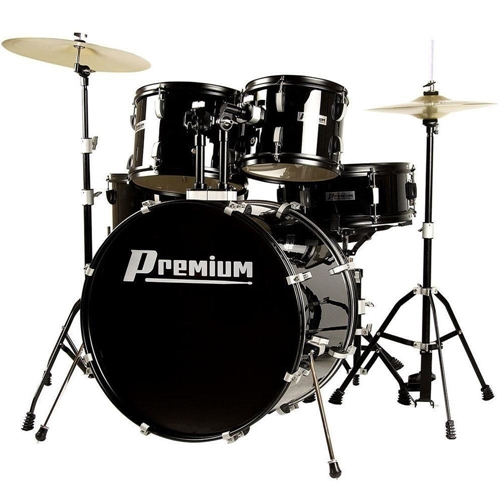

Instrumentos de Percussão
Os instrumentos de percussão são a espinha dorsal rítmica da música, abrangendo uma variedade infinita de sons.
Bateria: O coração de muitas bandas, adiciona energia às composições.
Tambores e Bongôs: Adicionam ritmos marcantes e envolventes.
Címbalos e Triângulos: Usados para adicionar ênfase e cor.
Marimbas e Xilofones: Produzem melodias e harmonias percussivas, adicionando uma dimensão única.
